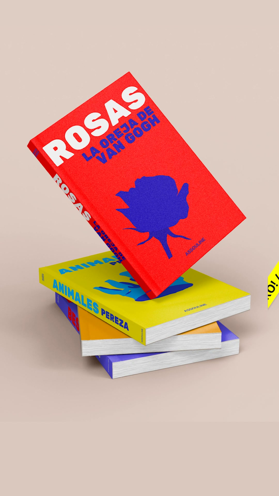
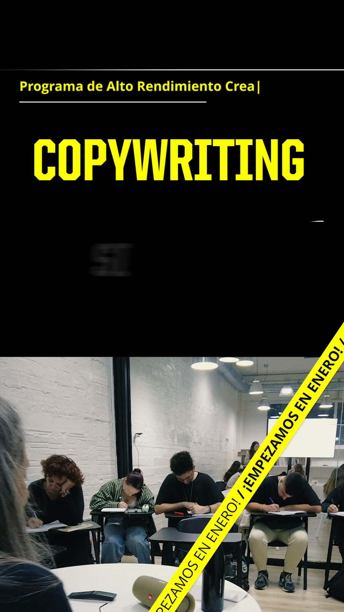
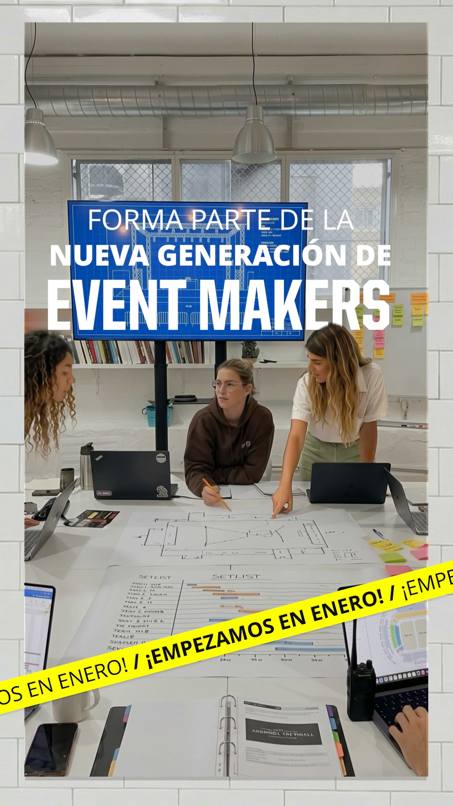

Demo · Barcelona School of Creativity · paso a paso
Así lo vivirían Laura (27 años, cuatro en marketing, quiere hacer Art Direction en enero) y vuestro equipo de admisiones. Los anuncios y la web siguen siendo los vuestros. La diferencia está en lo que pasa desde que Laura pide información hasta que paga la matrícula.
Ejemplo Demo preparada por Qualivo. Los anuncios son los que tenéis activos hoy en Meta. Programas, horarios, convocatorias (octubre, enero, marzo), becas y financiación «desde 200 €/mes» están sacados de vuestra web el 30-oct. Laura, «Carla» de admisiones, los mensajes y las cifras del panel son inventados. Los textos finales los aprobáis vosotros. El asistente no da precios fuera de lo publicado ni admite a nadie: eso lo hace admisiones.
Son tres de los 58 anuncios que tenéis activos hoy, lanzados el 23 de octubre. La creatividad no la tocamos. Lo que cambia es lo que lleva cada anuncio por detrás y adónde manda.
Programa Art Direction · vídeo · activo

utm_campaign=art-direction y utm_content=video-23oct. Cuando Laura se matricule en enero, sabréis que vino de este vídeo.Programa Copywriting · vídeo · activo

Programa Events & Experiences · vídeo · activo

[C] Biblioteca de anuncios de Meta, consulta del 30-oct-2026. La Biblioteca no muestra gasto ni resultados: eso lo veríamos con acceso a vuestra cuenta.
Vuestra solicitud de hoy pide nombre, correo, ciudad y programa, y termina en «te llamaremos». Proponemos añadir cinco toques que admisiones necesita antes de la reunión informativa. Pruébalo como si fueras Laura.
Hoy, en vuestra web
«Nos pondremos en contacto contigo para concertar una reunión.» Y hasta que alguien llama, nada.
Cuándo empezaría (octubre, enero o marzo), si le cuadra el horario presencial de 17:00 a 21:00, cómo lo pagaría (de una vez, financiación o beca) y a qué se dedica hoy. Cinco toques, menos de un minuto.
Ni DNI, ni estudios previos, ni portfolio obligatorio. Eso es de la entrevista.
Se crea la ficha con su puntuación y su grupo (ahora, siguiente convocatoria o mirando). Si es «ahora», le escribe el asistente al minuto y puede reservar la reunión informativa en el mismo chat. El Calendly que ya tenéis sigue sirviendo.
Laura envía la solicitud de Art Direction un martes a las 21:12, al salir del trabajo. Hoy esa solicitud espera a que alguien de admisiones llame al día siguiente. Aquí le contesta Nora, la asistente, con lo que vosotros aprobéis. Elige un camino; a la derecha, lo que pasa por detrás.
Nora no da precios fuera de lo publicado, no promete becas ni admite a nadie: eso lo hace admisiones. Admisiones ve cada conversación y puede entrar cuando quiera; en cuanto escribe una persona, Nora se calla con ese contacto. Mensajes automáticos solo de 9:00 a 22:00.
Otro caso: Sergi deja la solicitud en la página de Copywriting y no contesta al WhatsApp. A los 15 minutos le llama el asistente de voz. No vende: confirma lo básico y deja reservada la reunión informativa. Así se acaba el «no coge el teléfono» del equipo.
Una ficha, no un nombre y un correo. Admisiones solo recibe aviso de los A. Los B y los C los mueve el sistema hasta que suben o se apartan.
Entró por: anuncio «Programa Art Direction» (vídeo del 23-oct) → página de Art Direction → solicitud → WhatsApp con Nora
| Convocatoria: la siguiente (enero) | 25 |
| Programa concreto, no «aún no lo sé» | 10 |
| Horario presencial compatible | 15 |
| Forma de pago pensada (financiación) | 12 |
| Contesta en menos de 5 min y reserva sola | 15 |
| Ha visto financiación y becas | 5 |
| Total | 82 |
Pesos de ejemplo. Los aprobáis vosotros y se recalibran cada mes con las matrículas reales: qué perfiles acaban matriculándose y cuáles no.
Todos salen solos, de 9:00 a 22:00. Cualquier respuesta los para y pasa el contacto a la persona de admisiones. Cada texto lo aprobáis antes.
Pidió información y no responde ni al WhatsApp ni a la llamada.
Hola, Laura. Soy Nora, asistente de admisiones de Barcelona School of Creativity. Hemos recibido tu solicitud para Art Direction. ¿Te lo planteas para enero, marzo o más adelante?
Asunto: Laura, el programa de Art DirectionDuración, horario, las tres convocatorias, cómo es el proceso de selección y el plan de financiación. Y el enlace para reservar la reunión informativa cuando te venga bien.
Laura, algo que nos preguntan mucho es si hace falta saber dibujar para Art Direction. Carla te lo cuenta en 30 minutos, con trabajos de alumnos. ¿Reservamos?
Asunto: Qué hacen los alumnos de Art Direction al acabarTres trabajos de alumnos y dónde están ahora.
Laura, ¿sigues pensando en enero o lo dejamos para la convocatoria de marzo u octubre? Cualquiera está bien. [Enero] [Más adelante] [Ya no me interesa]
Laura P. · Art Direction · enero · ha vuelto 2 veces a la página de financiación sin contestar. Mejor llamada.
El punto donde más se pierde: quien reserva y no viene.
Listo, Laura: mañana miércoles a las 18:00, reunión informativa de Art Direction con Carla. Si te viene mal, contesta aquí y la movemos.
Laura, mañana a las 18:00 te espera Carla. Si quieres, mira antes trabajos de alumnos: [enlace]
En una hora, tu reunión con Carla. ¿Sigue bien? [Sí] [Mejor otro día]
Laura, no hemos coincidido con Carla. Sin problema. ¿Te va bien otro día? [Jueves 11:00] [Jueves 18:00] [Lunes 18:00]
Con la ficha delante. Sin más mensajes automáticos.
Donde hoy nadie vuelve a escribir antes de la siguiente convocatoria.
Laura, ¿te quedó alguna duda después de hablar con Carla? Si quieres, te la resolvemos por aquí.
Asunto: Laura, cómo pagar Art DirectionDe una vez o con el plan de financiación desde 200 € al mes, y los plazos de las becas 2026/2027. Con los números que apruebe la escuela.
Laura P. · admitida · Art Direction enero · abrió el email de financiación 2 veces · 4 días sin contestar.
Laura, el grupo de Art Direction de enero empieza en dos semanas. ¿Te reservo la plaza? [Sí] [Mejor marzo] [Hablar con Carla]
Hoy la matrícula va por transferencia con el IBAN en la web.
¡Enhorabuena, Laura! Para reservar tu plaza en Art Direction (enero), aquí tienes el enlace de matrícula: tarjeta, transferencia o financiación. [Matricularme]
Laura, vimos que la matrícula no se ha completado. ¿Te ayudamos con algo del pago o la financiación?
Laura P. · admitida hace 4 días · sin pagar · llamar.
Meta aprende de quién se matricula, no de quién hace clic, y busca más perfiles así.
Ejemplo: Pau pidió Events & Experiences «para octubre del año que viene».
Perfecto, Pau. Te apunto para Events & Experiences en octubre. Te escribo cuando abra el proceso de selección, antes de que se llenen las plazas. Si cambias de idea, escríbeme.
Asunto: Un evento que hicieron nuestros alumnosUn proyecto real del programa. Una vez al mes, como mucho.
Pau, como te dije: ya está abierto el proceso de selección de octubre. ¿Reservamos la reunión informativa? [Sí] [Mándamelo por aquí] [Este año no]
Sin programa ni fecha. Contenido y nada más.
Asunto: Lo que han hecho este mes en la escuelaTrabajos de alumnos y actividades abiertas, si las hay. Sin llamadas ni WhatsApp.
Por programa y por anuncio, hasta la matrícula. Cifras redondas e inventadas, no son previsiones. Versión interactiva en el panel en vivo, preparado para una escuela.
Por programa · 30 días · datos de ejemplo
| Programa | Inversión | Solicitudes | Cualificadas (A+B) | Reuniones informativas | Entrevistas | Matrículas | Coste por matrícula |
|---|---|---|---|---|---|---|---|
| Events & Experiences | 1.800 € | 34 | 15 | 10 | 6 | 2 | 900 € |
| Art Direction | 1.000 € | 20 | 11 | 8 | 5 | 2 | 500 € |
| Copywriting | 900 € | 16 | 8 | 6 | 4 | 1 | 900 € |
| Creative Content | 500 € | 9 | 4 | 3 | 2 | 1 | 500 € |
| IA generativa | 700 € | 22 | 5 | 3 | 1 | 0 | — |
| Audience Network (todos) | 500 € | 14 | 1 | 0 | 0 | 0 | — |
Así se ve lo que hoy no se puede ver: IA generativa trae muchas solicitudes y casi ninguna matrícula; Audience Network trae solicitudes que no avanzan. Todos los datos son de ejemplo.
A quién llamar hoy · Carla · datos de ejemplo
| Persona | Nota | Por qué hoy | Siguiente paso |
|---|---|---|---|
| Laura P. | 82 A | Reunión informativa a las 18:00 · Art Direction enero · pregunta por becas | Trabajos de alumnos de marketing · becas y financiación · fecha de entrevista |
| Jordi M. | 76 A | Admitido hace 4 días en Copywriting · abrió el email de financiación 2 veces | Llamar: duda del pago |
| Clara S. | 64 B | Entrevista hecha · «me lo pienso» · Events & Experiences enero | WhatsApp de Carla, no llamada |
| Sergi R. | 71 A | Reunión informativa mañana 18:00 · reservada con la llamada de voz | Nada hoy: recordatorios automáticos |